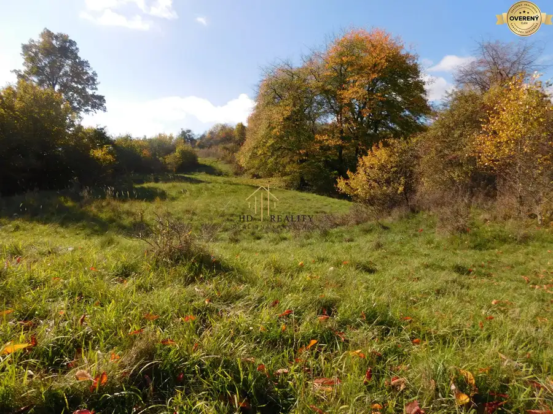
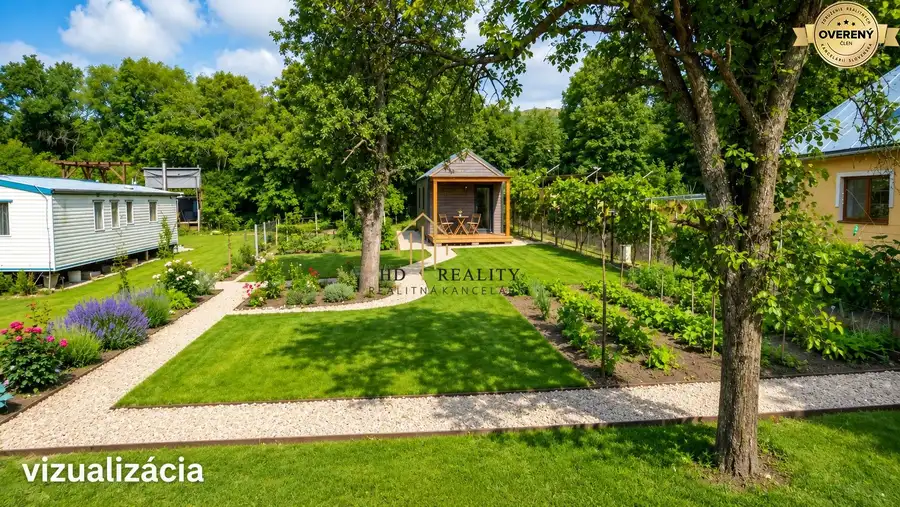
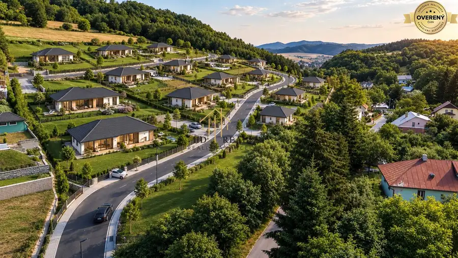

Predaj, pozemok pre rodinný dom Počúvadlo
Počúvadlo
- Plocha1632 m²
- Stavpôvodný
- Vlastníctvoosobné
O nehnuteľnosti
Hľadáte miesto, kde si postavíte vysnívaný dom alebo rekreačnú chatu? Máme pre vás skvelú ponuku – rovinatý, priestranný a slnečný pozemok v intraviláne obce
Počúvadlo
, len 5 minút autom od jazera
Počúvadlo
, obklopený nádhernou prírodou
Štiavnických vrchov
.
Výmera: 1632 m2
Terén: rovinatý, s jemným sklonom, situovaný za zástavbou rodinných domov
Prístup: vlastná prístupová cesta z hornej časti od hlavnej cesty
Územný plán: schválená výstavba rodinného domu alebo rekreačnej chaty
IS:
voda a elektrina
cca 45 m od pozemku (
obecný vodovod)
, kanalizácia formou vlastnej žumpy
Na pozemku sa nachádzajú aj dve drobné stavby (19 m2 a 29 m2) a časť parcely o výmere 425 m2 vedená ako zastavaná plocha, zvyšná časť je vedená ako záhrada.
Výhody pozemku:
- Tichá a bezpečná lokalita mimo hlavnej cesty – ideálne miesto na relax i trvalé bývanie
- Skvelý prístup k turistike,
cyklotrasám
a všetkým krásam okolia
Banskej Štiavnice
- Flexibilita – môžete si tu postaviť rodinný dom alebo rekreačnú chalupu presne podľa svojich predstáv
Tento pozemok je ideálnou voľbou pre každého, kto hľadá pokoj, súkromie a blízkosť prírody.
Pozývam vás na obhliadku – možno práve tu nájdete miesto, kde sa splní vaša predstava o dokonalom bývaní či oddychu.
Parametre
| Rozloha pozemku | 1632 m² |
|---|---|
| Vlastníctvo | osobné |
| Stav | pôvodný |
| Odvoz odpadu | áno |
| Voda | nie |
| El. napätie | 230V |
| Plyn | nie |
| Kanalizácia | nie |
| Internet | lokálny poskytovateľ |
| Inžinierske siete | blízko |
| Káblová televízia | nie |
| Orientácia | južná |
| Terén | mierny svah |
| Prístupová cesta | asfaltová cesta |
| Pripravené na výstavbu | schválené v územnom pláne |
| Dátum zverejnenia | 19. 10. 2025 |
Kde to je
Mohlo by Vás zaujímať

Pozemok10 80 824 €Predaj, rekreačný pozemok Svätý Anton Svätý Anton 13699 m² Hľadáte výnimočnú investičnú príležitosť v regióne , kde je o pozemky obrovský záujem? Ponúkame vám slnečný pozemok o výmere 13 699 m² v tichej…
Pozemok10 23 900 €Predaj, rekreačný pozemok Štiavnické Bane Štiavnické Bane 734 m² Lokalita: Štiavnické Bane (okres Banská Štiavnica) PARAMETRE POZEMKU: výmera: 734 m² terén: úplná rovina druh pozemku: rekreačný pozemok (vhodný na…
Pozemok10 1 785 403 €Predaj, stavebné pozemky Banská Štiavnica Banská Štiavnica 41521 m² HD Reality exkluzívne ponúka na predaj výnimočný developerský projekt v jednej z najatraktívnejších lokalít Banskej Štiavnice – Štefultov. Ide o 20…